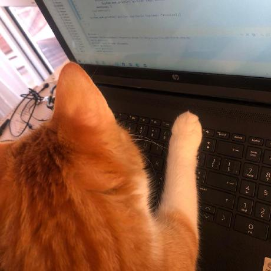

bir sure avukatlik yaptiktan sonra yazilim ogrenmeye yoneldim suan bir yandan qa testerlik icin bootcamp egitimi alirken bos zamanlarimda da dev toollarini ogrenmeye calisiyorum
psikopat bir kedi annesiyim
github profili duzenlemekten zevk aliyorum
bilin kurguya bayiliyorum
ingilizce ogrenmem gerek komik degil ama aklima geldi
